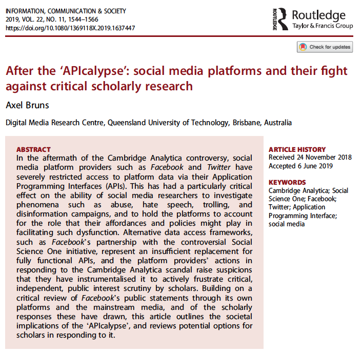
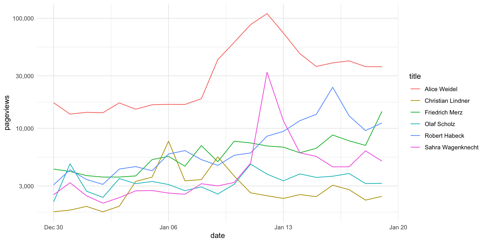

library(httr2)
library(jsonlite)
key = readLines("openai_key.txt")
req = request("https://api.openai.com/v1/images/generations") |>
req_headers(
"Content-Type" = "application/json",
"Authorization" = paste0("Bearer ", key)
) |>
req_body_json(list(
model = "dall-e-3",
prompt = "A team of communication researchers using digital research methods and computational methods, cyberpunk style",
n = 1,
size = "1024x1024"
)) |>
req_perform()
image_url = resp_body_json(req)$data[[1]]$url
download.file(url = image_url, destfile = "as_digimeth.png")APIs für Datenerhebung und Inhaltsanalyse
Vorlesung: Methoden der empirischen Kommunikations- und Medienforschung I / Datenerhebung, Wintersemester 2024/2025
Marko Bachl
Freie Universität Berlin
17. 01. 2025
Hallo
Arbeitsstelle Digitale Forschungsmethoden
dall-e-3, Prompt: A team of communication researchers using digital research methods and computational methods, cyberpunk style
Dieses Bild habe ich mit einer API erstellt
Nachmachen: üëâ bsp_dall-e.R (mit OpenAI-Account, $0.04/Bild)
Arbeitsstelle Digitale Forschungsmethoden

Real life
Präsentation und Code
Material: Präsentation HTML, Präsentation PDF, Code
Agenda
Was ist eine API?
Verbreiteter Einsatz in PuK: Erhebung digitaler Inhalte
Vor und nach der APIcalypse
Umsetzung mit
Rund{httr2}
Neuerer Einsatz in PuK: Nutzung von Cloud-Diensten (z.B. KI)
Zero-shot classification: Kurze Einführung
Zero-shot classification: Umsetzung mit der OpenAI-API
Was ist eine API?
Was ist eine API?
- Application Programming Interface = Programmierschnittstelle
- Austausch maschinenlesbarer Daten zwischen verschiedenen Programmen/Computern
- Web-APIs nutzen die gleichen Protokolle wie Browser, aber liefern anderen Datenstrukturen
- Formate sind standardisiert (z.B. XML oder JSON), Inhalte variieren
- oft nutzen Plattformen für ihre eigenen (Mobil-) Apps ebenfalls APIs
Ein einfaches Beispiel
Ein einfaches Beispiel
Anfrage
Grundbegriffe
Server-Client-Prinzip: Server definiert Schnittstelle, Client kann diese abfragen
REST API: Representational state transfer, Wortneuschöpfung; beschreibt abstrakt den Aufbau eines Datennetzwerks (z.B. des WWW); stateless, d.h., es passiert nur bei einer Anfrage etwas.
Streaming API: Verbindung bleibt über einen Zeitraum bestehen, wenn auf dem Server etwas passiert, wird es an Client gesendet.
Endpoint: URL, mit der ein API-Aufruf beginnt; Die meisten APIs haben mehrere Endpoints, in die sie verschiedene Inhalte und Dienste sortieren.
Parameter: Möglichkeit, weiter zu spezifizieren, was der API-Endpoint liefern soll.
Nachlesen

Verbreiteter Einsatz in PuK: Erhebung digitaler Inhalte
Vor der APIcalypse: Kommunikationsspuren auf Social Media
(Alternative) media sources in AfD-centered Facebook discussions
The study is based on all posts, comments, and replies on core AfD Facebook pages during the year 2016, as they could be retrieved during the last week of the year. The Facebook Graph API (https://developers.facebook.com/docs/graphapi) was used for the main data collection.
(Alternative) media sources in AfD-centered Facebook discussions
the sample consisted of 122 pages, mostly of regional and local sections of the party, of its youth organization Junge Alternative, and of AfD politicians. All posts on these pages (n = 170,033), all comments to the posts (n = 1,455,200), and all replies to the comments (n = 960,077) were retrieved (overall n = 2,585,310).
Post-API-age & APIcalypse

Post-API-age & APIcalypse
APIs der meisten großen Social-Media-Plattformen mehr oder weniger geschlossen
Keine (praktikablen) Zugänge zu Facebook, Instagram, Twitter
Eingeschränkter Zugang zu TikTok, Reddit, YouTube (aber kaum zu SN-Features)
Zugang zu kleineren Plattformen, z.B. BlueSky, Mastodon, Telegram
Problem: Willkür der Anbieter
Hoffnung: EU Digital Services Act (DSA)
APIs are alive and well
Trotzdem: APIs bleiben wichtiges Werkzeug für digitale Forschungsmethoden, wenn auch (aktuell) weniger für Social-Media-Forschung
Datenzugang: Bundestag, MediaWiki Action API (u.a. Wikipedia), Wikimedia REST API, YouTube, Telegram, Tagesschau, The Guardian, DESTATIS, …
Kommunikation mit Cloud-Diensten (2. Teil der Sitzung)
Umsetzung mit R und {httr2}
Umsetzung mit R und {httr2}
- Beispiel: Aufmerksamkeit für Spitzenkandidat:innen in den letzten drei Wochen — gemessen an den Aufrufen ihrer Wikipedia-Seiten
Umsetzung mit MediaWiki Action API, Endpoint PageViewInfo
Nachmachen: üëâ
bsp_wikipedia.R
Genutzte Pakete
Anfrage an die API
req = request(base_url = "https://de.wikipedia.org/w/api.php") |>
req_url_query(!!!list(
action = "query",
format = "json",
prop = "pageviews",
titles = c("Olaf_Scholz", "Robert_Habeck",
"Christian_Lindner", "Alice_Weidel",
"Sahra_Wagenknecht", "Friedrich_Merz"),
pvipdays = 21),
.multi = "pipe")
req |>
req_dry_run()GET /w/api.php?action=query&format=json&prop=pageviews&titles=Olaf_Scholz|Robert_Habeck|Christian_Lindner|Alice_Weidel|Sahra_Wagenknecht|Friedrich_Merz&pvipdays=21 HTTP/1.1
Host: de.wikipedia.org
User-Agent: httr2/1.0.1 r-curl/5.2.1 libcurl/8.7.1
Accept: */*
Accept-Encoding: deflate, gzipAntwort der API
{
"batchcomplete": "",
"query": {
"normalized": [
{
"from": "Olaf_Scholz",
"to": "Olaf Scholz"
},
{
"from": "Robert_Habeck",
"to": "Robert Habeck"
},
{
"from": "Christian_Lindner",
"to": "Christian Lindner"
},
{
"from": "Alice_Weidel",
"to": "Alice Weidel"
},
{
"from": "Sahra_Wagenknecht",
"to": "Sahra Wagenknecht"
},
{
"from": "Friedrich_Merz",
"to": "Friedrich Merz"
}
],
"pages": {
"9716234": {
"pageid": 9716234,
"ns": 0,
"title": "Alice Weidel",
"pageviews": {
"2024-12-27": 11397,
"2024-12-28": 17848,
"2024-12-29": 20511,
"2024-12-30": 17090,
"2024-12-31": 13469,
"2025-01-01": 13989,
"2025-01-02": 13872,
"2025-01-03": 17027,
"2025-01-04": 14936,
"2025-01-05": 16388,
"2025-01-06": 16526,
"2025-01-07": 16494,
"2025-01-08": 18594,
"2025-01-09": 42048,
"2025-01-10": 60472,
"2025-01-11": 87578,
"2025-01-12": 110229,
"2025-01-13": 73355,
"2025-01-14": 47699,
"2025-01-15": 36498,
"2025-01-16": 39356
}
},
"855225": {
"pageid": 855225,
"ns": 0,
"title": "Christian Lindner",
"pageviews": {
"2024-12-27": 2034,
"2024-12-28": 2271,
"2024-12-29": 2195,
"2024-12-30": 1748,
"2024-12-31": 1810,
"2025-01-01": 1957,
"2025-01-02": 1746,
"2025-01-03": 1963,
"2025-01-04": 3297,
"2025-01-05": 3607,
"2025-01-06": 7644,
"2025-01-07": 3338,
"2025-01-08": 3425,
"2025-01-09": 5507,
"2025-01-10": 3693,
"2025-01-11": 2596,
"2025-01-12": 2445,
"2025-01-13": 2311,
"2025-01-14": 2506,
"2025-01-15": 2399,
"2025-01-16": 3046
}
},
"9708": {
"pageid": 9708,
"ns": 0,
"title": "Friedrich Merz",
"pageviews": {
"2024-12-27": 4215,
"2024-12-28": 4657,
"2024-12-29": 4514,
"2024-12-30": 4268,
"2024-12-31": 4062,
"2025-01-01": 3726,
"2025-01-02": 3612,
"2025-01-03": 3615,
"2025-01-04": 3699,
"2025-01-05": 5205,
"2025-01-06": 5573,
"2025-01-07": 4537,
"2025-01-08": 6975,
"2025-01-09": 4976,
"2025-01-10": 7641,
"2025-01-11": 7375,
"2025-01-12": 6926,
"2025-01-13": 6752,
"2025-01-14": 6001,
"2025-01-15": 6593,
"2025-01-16": 8711
}
},
"293388": {
"pageid": 293388,
"ns": 0,
"title": "Olaf Scholz",
"pageviews": {
"2024-12-27": 3398,
"2024-12-28": 3915,
"2024-12-29": 2833,
"2024-12-30": 2153,
"2024-12-31": 4762,
"2025-01-01": 2692,
"2025-01-02": 2361,
"2025-01-03": 3503,
"2025-01-04": 3146,
"2025-01-05": 3296,
"2025-01-06": 3090,
"2025-01-07": 2719,
"2025-01-08": 2943,
"2025-01-09": 2534,
"2025-01-10": 3109,
"2025-01-11": 4732,
"2025-01-12": 3844,
"2025-01-13": 3339,
"2025-01-14": 3861,
"2025-01-15": 3587,
"2025-01-16": 3676
}
},
"1569620": {
"pageid": 1569620,
"ns": 0,
"title": "Robert Habeck",
"pageviews": {
"2024-12-27": 3648,
"2024-12-28": 3890,
"2024-12-29": 3677,
"2024-12-30": 3072,
"2024-12-31": 4205,
"2025-01-01": 3433,
"2025-01-02": 3100,
"2025-01-03": 4271,
"2025-01-04": 4496,
"2025-01-05": 4120,
"2025-01-06": 5848,
"2025-01-07": 6287,
"2025-01-08": 5201,
"2025-01-09": 4609,
"2025-01-10": 5698,
"2025-01-11": 5982,
"2025-01-12": 8497,
"2025-01-13": 9391,
"2025-01-14": 11746,
"2025-01-15": 13408,
"2025-01-16": 23620
}
},
"440646": {
"pageid": 440646,
"ns": 0,
"title": "Sahra Wagenknecht",
"pageviews": {
"2024-12-27": 2999,
"2024-12-28": 3771,
"2024-12-29": 3190,
"2024-12-30": 2497,
"2024-12-31": 3207,
"2025-01-01": 2443,
"2025-01-02": 2094,
"2025-01-03": 2348,
"2025-01-04": 2709,
"2025-01-05": 2727,
"2025-01-06": 2585,
"2025-01-07": 2523,
"2025-01-08": 3143,
"2025-01-09": 3003,
"2025-01-10": 3227,
"2025-01-11": 4829,
"2025-01-12": 32359,
"2025-01-13": 11705,
"2025-01-14": 5997,
"2025-01-15": 5566,
"2025-01-16": 4475
}
}
}
}
}
Antwort konvertieren und plotten
Antwort konvertieren und plotten

Umsetzung mit R und {httr2}
Workflow: API finden, Dokumentation verstehen, Daten abfragen, aufbereiten, analysieren
Einschränkung der MediaWiki Action API: Nur letzte 60 Tage
Alternative: Wikimedia REST API üëâ
bsp_wikipedia_rest.R
Fragen?
Neuerer Einsatz in PuK: Nutzung von Cloud-Diensten (z.B. KI)
Nutzung von Cloud-Diensten
Viele Cloud-Dienste lassen sich über APIs verwenden
Beispiele aus dem Bereich KI: Huggingface Inference API, OpenAI API, Perspective API
Workflow ist ähnlich: Anfrage senden, Antwort erhalten
Unterschiede: Erfordert fast immer Authentifizierung, häufig kostenpflichtig
Zero-shot classification: Kurze Einführung
Bag-of-Words Machine Learning
Abbildungen von Philipp K. Masur; Zur Entwicklung von Computational Text Analysis: Bachl & Scharkow (2024)
Transfer Learning
Abbildungen von Philipp K. Masur; Zur Entwicklung von Computational Text Analysis: Bachl & Scharkow (2024)
Zero-shot classification
Abbildungen von Philipp K. Masur; Zur Entwicklung von Computational Text Analysis: Bachl & Scharkow (2024)
Zero-shot classification: Hype (?)
Zero-shot classification: Umsetzung mit der OpenAI-API
Zero-shot classification: OpenAI-API
- Beispiel: Klassifikation von Inzivilität in Social-Media-Kommentaren
Klassifikation mit OpenAI GPT-4o und
httr2Nachmachen: üëâ
bsp_zero_shot_openai.R(mit OpenAI-Account)
Genutzte Pakete
Erkennen von Inzivilität in Social-Media-Kommentaren (Stoll et al., 2023)
Kommentar mit mindestens einer der folgenden Eigenschaften gilt als inzivil:
- Vulgäre, unangemessene Sprache, Fluchen
- Beleidigung, Profanität
- Entmenschlichung
- Sarkasmus, Spott, Zynismus
- Negative Stereotype
- Diskriminierung
- Androhung von Gewalt
- Verweigerung von Rechten
- Vorwurf der Lüge
- Erniedrigung, fehlender Respekt, Abwertung
Untersuchungsmaterial
Wir brauchen ein paar Kommentare zum Testen:
Einen klar inzivilen Kommentar
Einen klar nicht inzivilen Kommentar
Zwei mehrdeutige Kommentare:
- Einen nicht inzivilen Kommentar, der fälschlicherweise als inzivil klassifiziert wird
- Einen inzivilen Kommentar, der fälschlicherweise als nicht inzivil klassifiziert wird
URL für Anfrage
Key zur Anmeldung bei OpenAI
Schlüssel und Token niemals öffentlich teilen!
Prompt (1)
Codieranweisung: Was soll KI-Assistent tun?
Your task is to assist in the classification of social media commments.
You will receive a comment that was posted to a social media plattform.
Your task is to classify the commment as either incivil or civil.
Incivility is defined as a statement that contains any of the following features:
Vulgarity, Inappropriate Language, Swearing, Insults, Name Calling, Profanity,
Dehumanization, Sarcasm, Mockery, Cynicism, Negative Stereotypes, Discrimination,
Threats of Violence, Denial of Rights, Accusations of Lying, Degradation,
Disrespect, Devaluation.
Fill out the provided JSON response form.
First, provide your reasoning to decide whether the search query is incivil or civil.
Then give your classification.Prompt (2)
Kategoriensystem: Wie soll die Antwort aussehen?
response_format = list(
type = "json_schema",
json_schema = list(
name = "social_media_incivility",
schema = list(
type = "object",
properties = list(
reasoning = list(
description = "Short text to explain your reasoning",
type = "string"
),
classification = list(
description = "Classification into incivil or civil",
type = "string",
enum = c("incivil", "civil")
)
),
additionalProperties = FALSE,
required = c("reasoning", "classification")
)
)
)
response_format |>
toJSON() |>
prettify(){
"type": [
"json_schema"
],
"json_schema": {
"name": [
"social_media_incivility"
],
"schema": {
"type": [
"object"
],
"properties": {
"reasoning": {
"description": [
"Short text to explain your reasoning"
],
"type": [
"string"
]
},
"classification": {
"description": [
"Classification into incivil or civil"
],
"type": [
"string"
],
"enum": [
"incivil",
"civil"
]
}
},
"additionalProperties": [
false
],
"required": [
"reasoning",
"classification"
]
}
}
}
Prompt (3)
Codiereinheiten: Was soll klassifiziert werden?
Anfrage
req |>
req_auth_bearer_token(key) |>
req_body_json(list(
model = "gpt-4o",
messages = list(
list(role = "system", content = instr),
list(role = "user", content = cod[1])
),
response_format = response_format,
temperature = 0,
max_completion_tokens = 500
)) |>
req_dry_run()POST /v1/chat/completions HTTP/1.1
Host: api.openai.com
User-Agent: httr2/1.0.1 r-curl/5.2.1 libcurl/8.7.1
Accept: */*
Accept-Encoding: deflate, gzip
Authorization: <REDACTED>
Content-Type: application/json
Content-Length: 1302
{"model":"gpt-4o","messages":[{"role":"system","content":"Your task is to assist in the classification of social media commments.\nYou will receive a comment that was posted to a social media plattform.\nYour task is to classify the commment as either incivil or civil.\n\nIncivility is defined as a statement that contains any of the following features:\nVulgarity, Inappropriate Language, Swearing, Insults, Name Calling, Profanity,\nDehumanization, Sarcasm, Mockery, Cynicism, Negative Stereotypes, Discrimination,\nThreats of Violence, Denial of Rights, Accusations of Lying, Degradation,\nDisrespect, Devaluation.\n\nFill out the provided JSON response form.\nFirst, provide your reasoning to decide whether the search query is incivil or civil.\nThen give your classification."},{"role":"user","content":"Die Kartoffelbauern sollen daheim bleiben!"}],"response_format":{"type":"json_schema","json_schema":{"name":"social_media_incivility","schema":{"type":"object","properties":{"reasoning":{"description":"Short text to explain your reasoning","type":"string"},"classification":{"description":"Classification into incivil or civil","type":"string","enum":["incivil","civil"]}},"additionalProperties":false,"required":["reasoning","classification"]}}},"temperature":0,"max_completion_tokens":500}Antwort
resp = req |>
req_auth_bearer_token(key) |>
req_body_json(list(
model = "gpt-4o",
messages = list(
list(role = "system", content = instr),
list(role = "user", content = cod[1])
),
response_format = response_format,
temperature = 0,
max_completion_tokens = 500
)) |>
req_perform()
resp |>
resp_body_string() |>
prettify(){
"id": "chatcmpl-AqeOlUwjYoJLi6Om3rrWq2kD6EIpB",
"object": "chat.completion",
"created": 1737111711,
"model": "gpt-4o-2024-08-06",
"choices": [
{
"index": 0,
"message": {
"role": "assistant",
"content": "{\"reasoning\":\"The comment suggests that a group of people, in this case, 'potato farmers', should stay at home. This could be interpreted as a form of discrimination or devaluation, as it implies that this group is not welcome or should not participate in certain activities. Such statements can be seen as disrespectful or degrading towards the group mentioned.\",\"classification\":\"incivil\"}",
"refusal": null
},
"logprobs": null,
"finish_reason": "stop"
}
],
"usage": {
"prompt_tokens": 246,
"completion_tokens": 78,
"total_tokens": 324,
"prompt_tokens_details": {
"cached_tokens": 0,
"audio_tokens": 0
},
"completion_tokens_details": {
"reasoning_tokens": 0,
"audio_tokens": 0,
"accepted_prediction_tokens": 0,
"rejected_prediction_tokens": 0
}
},
"service_tier": "default",
"system_fingerprint": "fp_4691090a87"
}
Alle Kommentare
Code
# Anfragen für alle Kommentare ####
req_list = cod |>
map(~ {
req |>
req_auth_bearer_token(key) |>
req_body_json(list(
model = "gpt-4o",
messages = list(
list(role = "system", content = instr),
list(role = "user", content = .x)
),
response_format = response_format,
temperature = 0,
max_completion_tokens = 500
))
})
# Antworten für alle Kommentare ####
resp_list = req_list |>
req_perform_parallel()
# Extrahieren und aufbereiten ####
tibble(Kommentar = cod) |>
bind_cols(
resp_list |>
map_dfr( ~ {
.x |>
resp_body_json() |>
_$choices |>
_[[1]] |>
_$message |>
_$content |>
fromJSON() |>
as_tibble()
})
) |>
knitr::kable()| Kommentar | reasoning | classification |
|---|---|---|
| Die Kartoffelbauern sollen daheim bleiben! | The comment suggests that a specific group, ‘Kartoffelbauern’ (potato farmers), should stay at home. This could be interpreted as a form of discrimination or devaluation of a particular group, which falls under incivility. | incivil |
| Dein Hund sieht super süß aus. | The comment is a compliment about someone’s dog, using positive language without any negative or inappropriate elements. | civil |
| Dir sollte man bald mal einen Besuch abstatten. | The comment suggests a visit to the person, which can be interpreted as a threat of violence or intimidation, depending on the context. This makes it incivil. | incivil |
| Du geile Sau! | The phrase ‘Du geile Sau!’ translates to ‘You sexy pig!’ in English. While it may be intended as a compliment in some contexts, it uses language that can be considered vulgar or inappropriate, especially if the recipient does not welcome such remarks. The use of ‘Sau’ (pig) can be seen as dehumanizing or disrespectful, depending on the context and relationship between the individuals involved. | incivil |
Zero-shot classification
Generative LLMs und Natural language inference (NLI) (Laurer et al., 2023)
Rasant entwickelndes Forschungsfeld:
- Verbesserungen durch weiterentwickelte Modelle
- Evaluation der Performance: Was geht, was (noch) nicht?
- Prompt engineering: Welche Codieranweisungen sind besser?
- Forschungethische Fragen: Biases, Reproduzierbarkeit, Abgängigkeit von proprietären Modellen
Selbst ausprobieren - es ist nicht so schwer, wie es am Anfang aussieht.
Fragen?
Vielen Dank
Marko Bachl
Literatur
Bachl, M. (2018). (Alternative) media sources in AfD-centered Facebook discussions. Studies in Communication and Media, 7(2), 128–142. https://doi.org/ghhx99
Bachl, M., & Scharkow, M. (2024). Computational text analysis. OSF. https://doi.org/10.31219/osf.io/3yhu8
Bruns, A. (2019). After the „APIcalypse“: social media platforms and their fight against critical scholarly research. Information, Communication & Society, 22(11), 1544–1566. https://doi.org/gf8r25
Freelon, D. (2018). Computational research in the post-API age. Political Communication, 35(4), 665–668. https://doi.org/gfs6ng
Gilardi, F., Alizadeh, M., & Kubli, M. (2023). ChatGPT outperforms crowd workers for text-annotation tasks. Proceedings of the National Academy of Sciences, 120(30), e2305016120. https://doi.org/10.1073/pnas.2305016120
Haim, M. (2023). Computational Communication Science: Eine Einführung. Springer Fachmedien Wiesbaden. https://doi.org/10.1007/978-3-658-40171-9
Heseltine, M., & Clemm von Hohenberg, B. (2024). Large language models as a substitute for human experts in annotating political text. Research & Politics, 11(1), 20531680241236239. https://doi.org/gtkhqr
Laurer, M., Atteveldt, W. van, Casas, A., & Welbers, K. (2023). Less annotating, more classifying: Addressing the data scarcity issue of supervised machine learning with deep transfer learning and BERT-NLI. Political Analysis, 1–17. https://doi.org/10.1017/pan.2023.20
Stoll, A., Wilms, L., & Ziegele, M. (2023). Developing an incivility dictionary for German online discussions – a semi-automated approach combining human and artificial knowledge. Communication Methods and Measures, 17(2), 131–149. https://doi.org/gsnfdn
Törnberg, P. (2024). Best practices for text annotation with large language models. arXiv. https://doi.org/gtn9qf